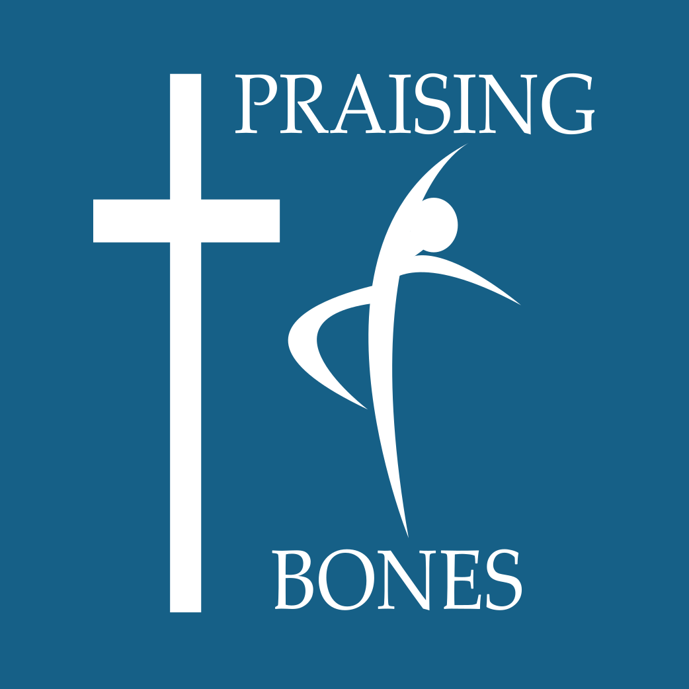

P
R
A
I
S
I
N
G
B
O
N
E
S
Home
Classes
Events
Registration
Founder
Welcome to Praising Bones!
Dance is a unique passion and gift. To dance is to express through movements. In this new day of age we see so many using this gift to express messages that lead people a stray from God, and communicating ideas with little worth. Praising Bones uses dancing to share God's message with the world, and have a whole lot of fun doing it!
Hip Hop
Modern/Lyrical
Freestyle
BACK UP
Hip Hop
Satirday 10:30-11:30pm
Location: 123 Miton Lane, Milton, VT

BACK UP
Modern/Lyrical
Sunday 10:30-11:30pm
Location: 123 Miton Lane, Milton, VT
BACK UP
Freestyle
Sunday 11:30-1:30
Location: 123 Miton Lane, Milton, VT
Movie Day
ADD GOOGLE FORM HERE
Samantha Savard
First off you can call me Sam or Sammy. I am the founder of Praising Bones! I have a deep passion for dance that I never knew what to do with, but I found my calling. God had called me to creating this company that connects passion and faith. I spent a few years as a kid at a hip hop dance company, and I absolutely loved it. What I didn't really realize until I was older was the negative atmosphere that I was being introduced to. I mean eight year old kids dancing to songs about drugs and strippers; as you can imagine my parents pulled me out of that really quickly. I had to learn and evolve my technique on my own. As time went on I was asked to be a councilor at one of my friends dance camps for kids. I was now the influencer instead of the one being influenced. Everything I did impacted these kids lives. I knew that moving forward what I was called to do; bring faith back into the world of dance.